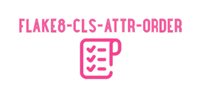
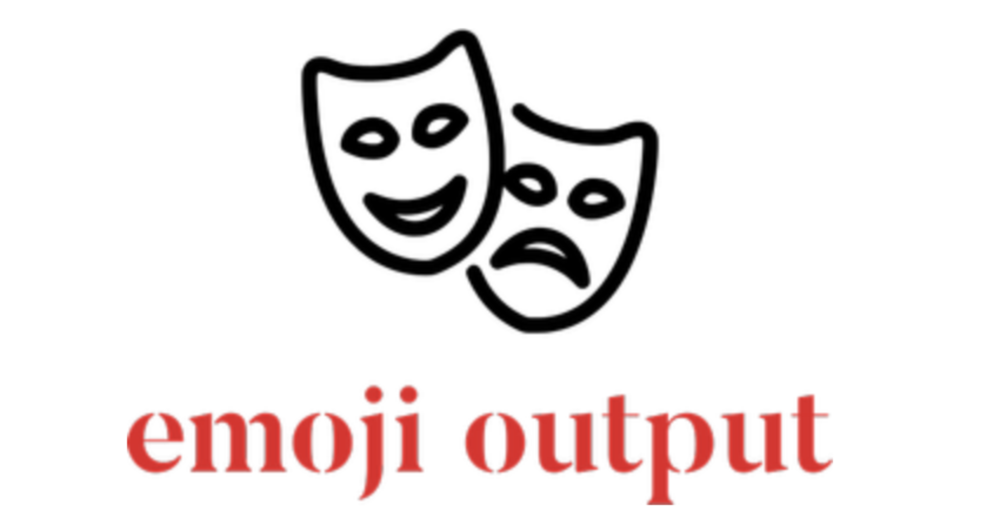
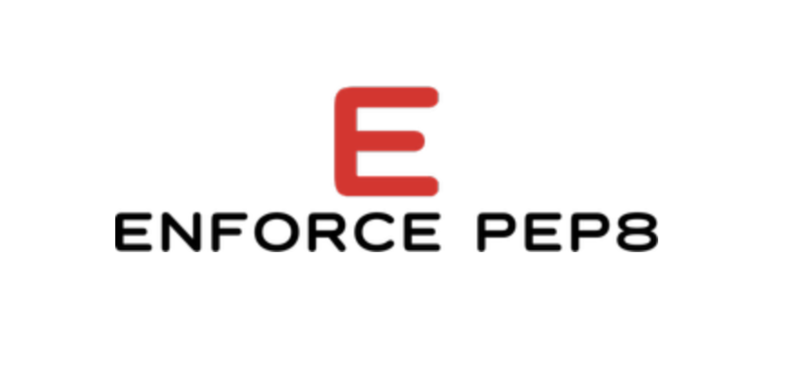
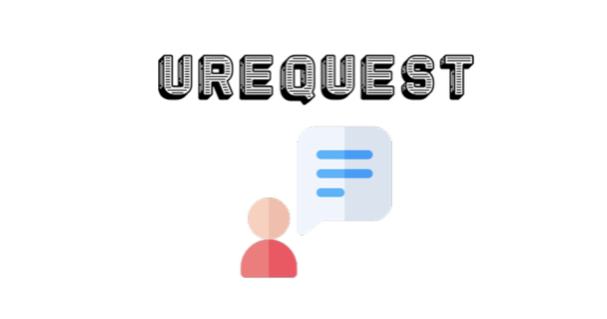

Pet projects

Manage order of class attributes
I'm tired of receiving or leaving comments during code reviews such as: "Please sort class attributes in alphabetical order". This should be managed automatically by static code assessment to avoid human interaction. That's why flake8 based plugin came out. It will check your class attributes for proper order.
Check it out!
Add emoji to your pytest results output
Pytest is a decent python testing framework. It allows python developers to extend basic functionality with custom plugins. As a result new pytest command line options are applicable once plugin is properly structured. Emoji support is a funny starting point to comprehend pytest plugins.
Check it out!
Punishment for bad python code
I am a big fan of clean and precise pythonic code. But sometimes I observe once developers came from other languages (Java, javaScript, C#, etc.) they tend to write code far away from pythonic style that is based on PEP-8 conventions. That's why enforce-pep8 python package is built to perform overall python code diagnostics.
Check it out!
Object oriented requests library
I'm pretty sure that every python developer has ever encountered with a great requests library, but in certain cases it provides procedural API like requests.get(url), requests.post(url), etc. Urequest (aka user-friendly requests) library aims to provide a pure object oriented HTTP client API.
Check it out!